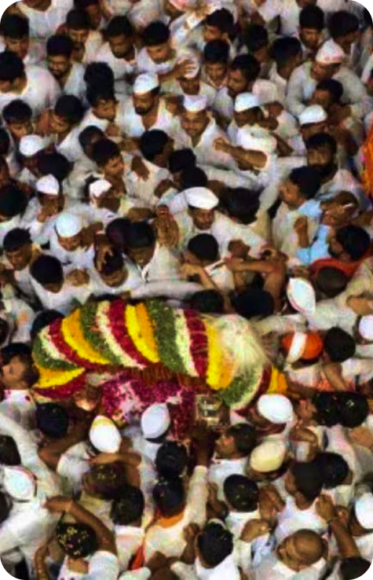

Warkaris walk barefoot, singing bhajan and chanting "Gyanba Tukaram" or "Mauli Mauli" to the beat of drums (dholki) & cymbals (veena). & then the procession stops here for a night stay on its way towards Pandharpur.